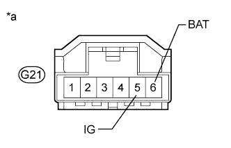

DTC C1434 Steering Angle Sensor Output Malfunction |
| DTC Code | DTC Detection Condition | Trouble Area |
| C1434 | An error in communication between the skid control ECU and the steering angle sensor, or an abnormal steering angle sensor zero point. |
|
| 1.CHECK DTC |
Clear the DTCs (Click here).
Turn the engine switch off.
Turn the engine switch on (IG) again and check that no CAN communication system DTC is output (Click here).
Start the engine.
Drive the vehicle at a speed of 35 km/h (22 mph) and turn the steering wheel to the right and left, and then check that no speed sensor or yaw rate and acceleration sensor DTCs are output (Click here).
| Result | Proceed to |
| No CAN communication system, speed sensor, or yaw rate and acceleration sensor DTCs are output | A |
| CAN communication system DTC is output | B |
| Speed sensor or yaw rate and acceleration sensor DTC is output | C |
|
| ||||
|
| ||||
| A | |
| 2.CHECK TERMINAL VOLTAGE (IG, BAT) |
Make sure that there is no looseness in the locking part and connecting part of the connectors.
Disconnect the G21 steering angle sensor connector.
|  |
Measure the voltage according to the value(s) in the table below.
| Tester Connection | Switch Condition | Specified Condition |
| G21-5 (IG) - Body ground | Engine switch on (IG) | 11 to 14 V |
| G21-6 (BAT) - Body ground | Always | 11 to 14 V |
| *a | Front view of wire harness connector (to Steering Angle Sensor) |
|
| ||||
| OK | |
| 3.CHECK HARNESS AND CONNECTOR (GROUND CIRCUIT) |
Turn the engine switch off.
Disconnect the G21 steering angle sensor connector.
Measure the resistance according to the value(s) in the table below.
| Tester Connection | Condition | Specified Condition |
| G21-2 (ESS) - Body ground | Always | Below 1 Ω |
|
| ||||
| OK | ||
| ||